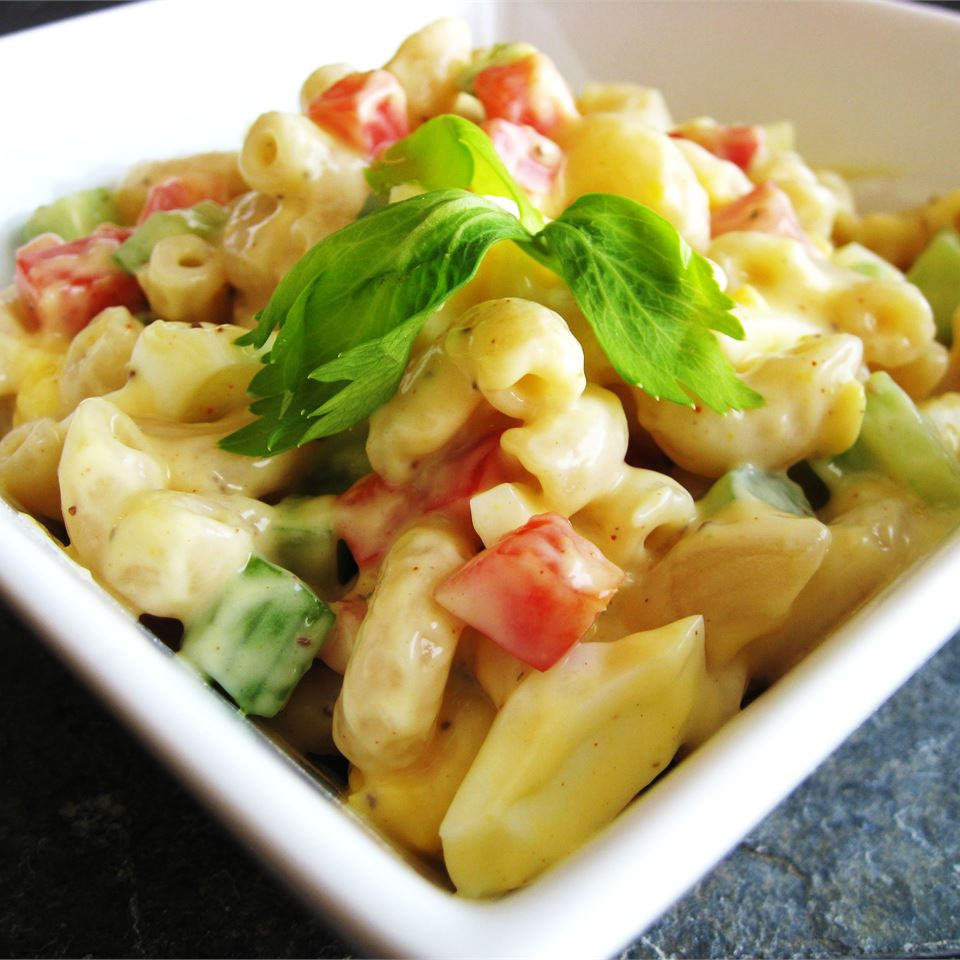

Lasagna

Recipe
This is a simple recipe for a lasagna salad
Ingredients
- 2 cups uncooked elbow macaroni
- 3 large eggs hard-cooked eggs, chopped
- 1 small onion, chopped
- 3 stalks celery, chopped
- 1 small red bell pepper, seeded and chopped
- 2 tablespoons dill pickle relish
Steps
-
Bring a pot of lightly salted water to a boil.
Add macaroni, and cook for 8 to 10 minutes, until tender.
Drain, and set aside to cool.
-
In a large bowl, stir together the eggs, onion, celery, red pepper, and relish.
In a small bowl, stir together the salad dressing, mustard, white sugar, vinegar, salt and celery seed.
Pour over the vegetables, and stir in macaroni until well blended.
Cover and chill for at least 1 hour before serving.